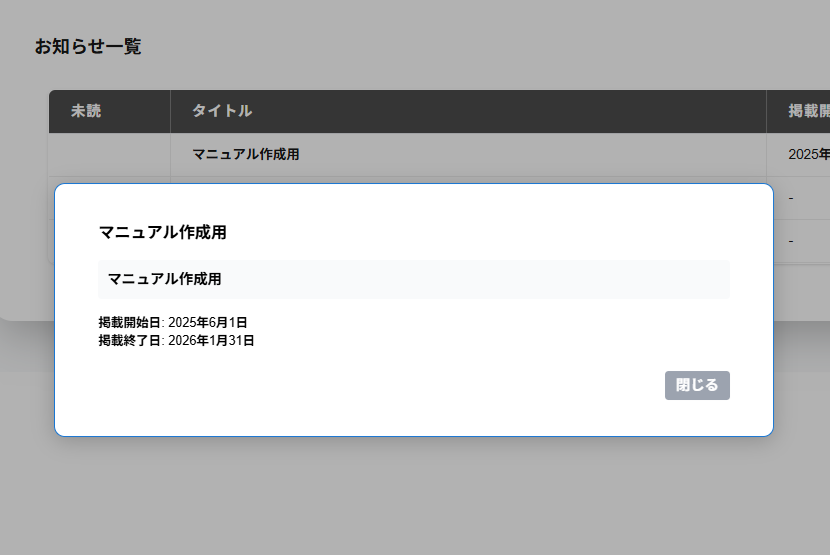

お知らせの行をクリックすると、お知らせの詳細が表示されます。
お知らせの詳細の画面には以下の項目が表示されます。
・タイトル
お知らせのタイトル名が表示されます。
・本文
お知らせの本文が表示されます。
・掲載開始日
掲載開始日の年月日が表示されます。
・掲載終了日
掲載終了日の年月日が表示されます。
掲載終了日が表示される場合は、掲載終了日までおしらせの詳細を確認できます。
お知らせの行をクリックして確認するとその行の未読の列が空欄になります。
※お知らせの内容は、予告なく変更されることがあります。
